᾿Εὰν ᾖ ὁποσαοῦν μεγέθη ὁποσωνοῦν μεγεθῶν ἴσων τὸ πλῆθος ἕκαστον ἑκάστου ἰσάκις πολλαπλάσιον, ὁσαπλάσιόν ἐστιν ἓν τῶν μεγεθῶν ἑνός, τοσαυταπλάσια ἔσται καὶ τὰ πάντα τῶν πάντων.
῎Εστω ὁποσαοῦν μεγέθη τὰ ΑΒ, ΓΔ ὁποσωνοῦν μεγεθῶν τῶν Ε, Ζ ἴσων τὸ πλῆθος ἕκαστον ἑκάστου ἰσάκις πολλαπλάσιον· λέγω, ὅτι ὁσαπλάσιόν ἐστι τὸ ΑΒ τοῦ Ε, τοσαυταπλάσια ἔσται καὶ τὰ ΑΒ, ΓΔ τῶν Ε, Ζ.
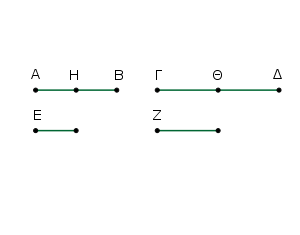
᾿Επεὶ γὰρ ἰσάκις ἐστὶ πολλαπλάσιον τὸ ΑΒ τοῦ Ε καὶ τὸ ΓΔ τοῦ Ζ, ὅσα ἄρα ἐστὶν ἐν τῷ ΑΒ μεγέθη ἴσα τῷ Ε, τοσαῦτα καὶ ἐν τῷ ΓΔ ἴσα τῷ Ζ.
διῃρήσθω τὸ μὲν ΑΒ εἰς τὰ τῷ Ε μεγέθη ἴσα τὰ ΑΗ, ΗΒ, τὸ δὲ ΓΔ εἰς τὰ τῷ Ζ ἴσα τὰ ΓΘ, ΘΔ· ἔσται δὴ ἴσον τὸ πλῆθος τῶν ΑΗ, ΗΒ τῷ πλήθει τῶν ΓΘ, ΘΔ. καὶ ἐπεὶ ἴσον ἐστὶ τὸ μὲν ΑΗ τῷ Ε, τὸ δὲ ΓΘ τῷ Ζ, ἴσον ἄρα τὸ ΑΗ τῷ Ε, καὶ τὰ ΑΗ, ΓΘ τοῖς Ε, Ζ. διὰ τὰ αὐτὰ δὴ ἴσον ἐστὶ τὸ ΗΒ τῷ Ε, καὶ τὰ ΗΒ, ΘΔ τοῖς Ε, Ζ·
ὅσα ἄρα ἐστὶν ἐν τῷ ΑΒ ἴσα τῷ Ε, τοσαῦτα καὶ ἐν τοῖς ΑΒ, ΓΔ ἴσα τοῖς Ε, Ζ·
ὁσαπλάσιον ἄρα ἐστὶ τὸ ΑΒ τοῦ Ε, τοσαυταπλάσια ἔσται καὶ τὰ ΑΒ, ΓΔ τῶν Ε, Ζ.
᾿Εὰν ἄρα ᾖ ὁποσαοῦν μεγέθη ὁποσωνοῦν μεγεθῶν ἴσων τὸ πλῆθος ἕκαστον ἑκάστου ἰσάκις πολλαπλάσιον, ὁσαπλάσιόν ἐστιν ἓν τῶν μεγεθῶν ἑνός, τοσαυταπλάσια ἔσται καὶ τὰ πάντα τῶν πάντων· ὅπερ ἔδει δεῖξαι.
᾿Εὰν πρῶτον δευτέρου ἰσάκις ᾖ πολλαπλάσιον καὶ τρίτον τετάρτου, ᾖ δὲ καὶ πέμπτον δευτέρου ἰσάκις πολλαπλάσιον καὶ ἕκτον τετάρτου, καὶ συντεθὲν πρῶτον καὶ πέμπτον δευτέρου ἰσάκις ἔσται πολλαπλάσιον καὶ τρίτον καὶ ἕκτον τετάρτου.
Πρῶτον γὰρ τὸ ΑΒ δευτέρου τοῦ Γ ἰσάκις ἔστω πολλαπλάσιον καὶ τρίτον τὸ ΔΕ τετάρτου τοῦ Ζ, ἔστω δὲ καὶ πέμπτον τὸ ΒΗ δευτέρου τοῦ Γ ἰσάκις πολλαπλάσιον καὶ ἕκτον τὸ ΕΘ τετάρτου τοῦ Ζ· λέγω, ὅτι καὶ συντεθὲν πρῶτον καὶ πέμπτον τὸ ΑΗ δευτέρου τοῦ Γ ἰσάκις ἔσται πολλαπλάσιον καὶ τρίτον καὶ ἕκτον τὸ ΔΘ τετάρτου τοῦ Ζ.
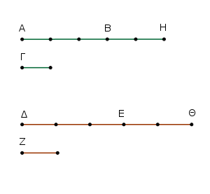
᾿Επεὶ γὰρ ἰσάκις ἐστὶ πολλαπλάσιον τὸ ΑΒ τοῦ Γ καὶ τὸ ΔΕ τοῦ Ζ, ὅσα ἄρα ἐστὶν ἐν τῷ ΑΒ ἴσα τῷ Γ, τοσαῦτα καὶ ἐν τῷ ΔΕ ἴσα τῷ Ζ. διὰ τὰ αὐτὰ δὴ καὶ ὅσα ἐστὶν ἐν τῷ ΒΗ ἴσα τῷ Γ, τοσαῦτα καὶ ἐν τῷ ΕΘ ἴσα τῷ Ζ·
ὅσα ἄρα ἐστὶν ἐν ὅλῳ τῷ ΑΗ ἴσα τῷ Γ, τοσαῦτα καὶ ἐν ὅλῳ τῷ ΔΘ ἴσα τῷ Ζ· ὁσαπλάσιον ἄρα ἐστὶ τὸ ΑΗ τοῦ Γ, τοσαυταπλάσιον ἔσται καὶ τὸ ΔΘ τοῦ Ζ.
καὶ συντεθὲν ἄρα πρῶτον καὶ πέμπτον τὸ ΑΗ δευτέρου τοῦ Γ ἰσάκις ἔσται πολλαπλάσιον καὶ τρίτον καὶ ἕκτον τὸ ΔΘ τετάρτου τοῦ Ζ.
᾿Εὰν ἄρα πρῶτον δευτέρου ἰσάκις ᾖ πολλαπλάσιον καὶ τρίτον τετάρτου, ᾖ δὲ καὶ πέμπτον δευτέρου ἰσάκις πολλαπλάσιον καὶ ἕκτον τετάρτου, καὶ συντεθὲν πρῶτον καὶ πέμπτον δευτέρου ἰσάκις ἔσται πολλαπλάσιον καὶ τρίτον καὶ ἕκτον τετάρτου· ὅπερ ἔδει δεῖξαι.
᾿Εὰν πρῶτον δευτέρου ἰσάκις ᾖ πολλαπλάσιον καὶ τρίτον τετάρτου, ληφθῇ δὲ ἰσάκις πολλαπλάσια τοῦ τε πρώτου καὶ τρίτου, καὶ δι᾿ ἴσου τῶν ληφθέντων ἑκάτερον ἑκατέρου ἰσάκις ἔσται πολλαπλάσιον τὸ μὲν τοῦ δευτέρου τὸ δὲ τοῦ τετάρτου.
Πρῶτον γὰρ τὸ Α δευτέρου τοῦ Β ἰσάκις ἔστω πολλαπλάσιον καὶ τρίτον τὸ Γ τετάρτου τοῦ Δ, καὶ εἰλήφθω τῶν Α, Γ ἰσάκις πολλαπλάσια τὰ ΕΖ, ΗΘ· λέγω, ὅτι ἰσάκις ἐστὶ πολλαπλάσιον τὸ ΕΖ τοῦ Β καὶ τὸ ΗΘ τοῦ Δ.
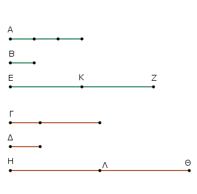
᾿Επεὶ γὰρ ἰσάκις ἐστὶ πολλαπλάσιον τὸ ΕΖ τοῦ Α καὶ τὸ ΗΘ τοῦ Γ, ὅσα ἄρα ἐστὶν ἐν τῷ ΕΖ ἴσα τῷ Α, τοσαῦτα καὶ ἐν τῷ ΗΘ ἴσα τῷ Γ. διῃρήσθω τὸ μὲν ΕΖ εἰς τὰ τῷ Α μεγέθη ἴσα τὰ ΕΚ, ΚΖ, τὸ δὲ ΗΘ εἰς τὰ τῷ Γ ἴσα τὰ ΗΛ, ΛΘ·
ἔσται δὴ ἴσον τὸ πλῆθος τῶν ΕΚ, ΚΖ τῷ πλήθει τῶν ΗΛ, ΛΘ. καὶ ἐπεὶ ἰσάκις ἐστὶ πολλαπλάσιον τὸ Α τοῦ Β καὶ τὸ Γ τοῦ Δ, ἴσον δὲ τὸ μὲν ΕΚ τῷ Α, τὸ δὲ ΗΛ τῷ Γ, ἰσάκις ἄρα ἐστὶ πολλαπλάσιον τὸ ΕΚ τοῦ Β καὶ τὸ ΗΛ τοῦ Δ. διὰ τὰ αὐτὰ δὴ ἰσάκις ἐστὶ πολλαπλάσιον τὸ ΚΖ τοῦ Β καὶ τὸ ΛΘ τοῦ Δ.
ἐπεὶ οὖν πρῶτον τὸ ΕΚ δευτέρου τοῦ Β ἴσάκις ἐστὶ πολλαπλάσιον καὶ τρίτον τὸ ΗΛ τετάρτου τοῦ Δ, ἔστι δὲ καὶ πέμπτον τὸ ΚΖ δευτέρου τοῦ Β ἰσάκις πολλαπλάσιον καὶ ἕκτον τὸ ΛΘ τετάρτου τοῦ Δ, καὶ συντεθὲν ἄρα πρῶτον καὶ πέμπτον τὸ ΕΖ δευτέρου τοῦ Β ἰσάκις ἐστὶ πολλαπλάσιον καὶ τρίτον καὶ ἕκτον τὸ ΗΘ τετάρτου τοῦ Δ.
᾿Εὰν ἄρα πρῶτον δευτέρου ἰσάκις ᾖ πολλαπλάσιον καὶ τρίτον τετάρτου, ληφθῇ δὲ τοῦ πρώτου καὶ τρίτου ἰσάκις πολλαπλάσια, καὶ δι᾿ ἴσου τῶν ληφθέντων ἑκάτερον ἑκατέρου ἰσάκις ἔσται πολλαπλάσιον τὸ μὲν τοῦ δευτέρου τὸ δὲ τοῦ τετάρτου· ὅπερ ἔδει δεῖξαι.
᾿Εὰν πρῶτον πρὸς δεύτερον τὸν αὐτὸν ἔχῃ λόγον καὶ τρίτον πρὸς τέταρτον, καὶ τὰ ἰσάκις πολλαπλάσια τοῦ τε πρώτου καὶ τρίτου πρὸς τὰ ἰσάκις πολλαπλάσια τοῦ δευτέρου καὶ τετάρτου καθ᾿ ὁποιονοῦν πολλαπλασιασμὸν τὸν αὐτὸν ἕξει λόγον ληφθέντα κατάλληλα.
Πρῶτον γὰρ τὸ Α πρὸς δεύτερον τὸ Β τὸν αὐτὸν ἐχέτω λόγον καὶ τρίτον τὸ Γ πρὸς τέταρτον τὸ Δ, καὶ εἰλήφθω τῶν μὲν Α, Γ ἰσάκις πολλαπλάσια τὰ Ε, Ζ, τῶν δὲ Β, Δ ἄλλα, ἃ ἔτυχεν, ἰσάκις πολλαπλάσια τὰ Η, Θ· λέγω, ὅτι ἐστὶν ὡς τὸ Ε πρὸς τὸ Η, οὕτως τὸ Ζ πρὸς τὸ Θ.
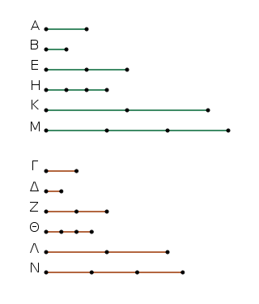
Εἰλήφθω γὰρ τῶν μὲν Ε, Ζ ἰσάκις πολλαπλάσια τὰ Κ, Λ, τῶν δὲ Η, Θ ἄλλα, ἃ ἔτυχεν, ἰσάκις πολλαπλάσια τὰ Μ, Ν. [Καὶ] ἐπεὶ ἰσάκις ἐστὶ πολλαπλάσιον τὸ μὲν Ε τοῦ Α, τὸ δὲ Ζ τοῦ Γ, καὶ εἴληπται τῶν Ε, Ζ ἴσάκις πολλαπλάσια τὰ Κ, Λ, ἴσάκις ἄρα ἐστὶ πολλαπλάσιον τὸ Κ τοῦ Α καὶ τὸ Λ τοῦ Γ.
διὰ τὰ αὐτὰ δὴ ἰσάκις ἐστὶ πολλαπλάσιον τὸ Μ τοῦ Β καὶ τὸ Ν τοῦ Δ. καὶ ἐπεί ἐστιν ὡς τὸ Α πρὸς τὸ Β, οὕτως τὸ Γ πρὸς τὸ Δ, καὶ εἴληπται τῶν μὲν Α, Γ ἰσάκις πολλαπλάσια τὰ Κ, Λ, τῶν δὲ Β, Δ ἄλλα, ἃ ἔτυχεν, ἰσάκις πολλαπλάσια τὰ Μ, Ν, εἰ ἄρα ὑπερέχει τὸ Κ τοῦ Μ, ὑπερέχει καὶ τὸ Λ τοῦ Ν, καὶ εἰ ἴσον, ἴσον, καὶ εἰ ἔλαττον, ἔλαττον. καί ἐστι τὰ μὲν Κ, Λ τῶν Ε, Ζ ἰσάκις πολλαπλάσια, τὰ δὲ Μ, Ν τῶν Η, Θ ἄλλα, ἃ ἔτυχεν, ἰσάκις πολλαπλάσια· ἔστιν ἄρα ὡς τὸ Ε πρὸς τὸ Η, οὕτως τὸ Ζ πρὸς τὸ Θ.
᾿Εὰν ἄρα πρῶτον πρὸς δεύτερον τὸν αὐτὸν ἔχῃ λόγον καὶ τρίτον πρὸς τέταρτον, καὶ τὰ ἰσάκις πολλαπλάσια τοῦ τε πρώτου καὶ τρίτου πρὸς τὰ ἰσάκις πολλαπλάσια τοῦ δευτέρου καὶ τετάρτου τὸν αὐτὸν ἕξει λόγον καθ᾿ ὁποιονοῦν πολλαπλασιασμὸν ληφθέντα κατάλληλα· ὅπερ ἔδει δεῖξαι.
᾿Εὰν μέγεθος μεγέθους ἰσάκις ᾖ πολλαπλάσιον, ὅπερ ἀφαιρεθὲν ἀφαιρεθέντος, καὶ τὸ λοιπὸν τοῦ λοιποῦ ἰσάκις ἔσται πολλαπλάσιον, ὁσαπλάσιόν ἐστι τὸ ὅλον τοῦ ὅλου.
Μέγεθος γὰρ τὸ ΑΒ μεγέθους τοῦ ΓΔ ἰσάκις ἔστω πολλαπλάσιον, ὅπερ ἀφαιρεθὲν τὸ ΑΕ ἀφαιρεθέντος τοῦ ΓΖ· λέγω, ὅτι καὶ λοιπὸν τὸ ΕΒ λοιποῦ τοῦ ΖΔ ἰσάκις ἔσται πολλαπλάσιον, ὁσαπλάσιόν ἐστιν ὅλον τὸ ΑΒ ὅλου τοῦ ΓΔ.
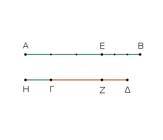
῾Οσαπλάσιον γάρ ἐστι τὸ ΑΕ τοῦ ΓΖ, τοσαυταπλάσιον γεγονέτω καὶ τὸ ΕΒ τοῦ ΓΗ. Καὶ ἐπεὶ ἰσάκις ἐστὶ πολλαπλάσιον τὸ ΑΕ τοῦ ΓΖ καὶ τὸ ΕΒ τοῦ ΗΓ, ἰσάκις ἄρα ἐστὶ πολλαπλάσιον τὸ ΑΕ τοῦ ΓΖ καὶ τὸ ΑΒ τοῦ ΗΖ.
κεῖται δὲ ἰσάκις πολλαπλάσιον τὸ ΑΕ τοῦ ΓΖ καὶ τὸ ΑΒ τοῦ ΓΔ. ἰσάκις ἄρα ἐστὶ πολλαπλάσιον τὸ ΑΒ ἑκατέρου τῶν ΗΖ, ΓΔ· ἴσον ἄρα τὸ ΗΖ τῷ ΓΔ. κοινὸν ἀφῃρήσθω τὸ ΓΖ· λοιπὸν ἄρα τὸ ΗΓ λοιπῷ τῷ ΖΔ ἴσον ἐστίν.
καὶ ἐπεὶ ἰσάκις ἐστὶ πολλαπλάσιον τὸ ΑΕ τοῦ ΓΖ καὶ τὸ ΕΒ τοῦ ΗΓ, ἴσον δὲ τὸ ΗΓ τῷ ΔΖ, ἰσάκις ἄρα ἐστὶ πολλαπλάσιον τὸ ΑΕ τοῦ ΓΖ καὶ τὸ ΕΒ τοῦ ΖΔ. ἰσάκις δὲ ὑπόκειται πολλαπλάσιον τὸ ΑΕ τοῦ ΓΖ καὶ τὸ ΑΒ τοῦ ΓΔ· ἰσάκις ἄρα ἐστὶ πολλαπλάσιον τὸ ΕΒ τοῦ ΖΔ καὶ τὸ ΑΒ τοῦ ΓΔ. καὶ λοιπὸν ἄρα τὸ ΕΒ λοιποῦ τοῦ ΖΔ ἰσάκις ἔσται πολλαπλάσιον, ὁσαπλάσιόν ἐστιν ὅλον τὸ ΑΒ ὅλου τοῦ ΓΔ.
᾿Εὰν ἄρα μέγεθος μεγέθους ἰσάκις ᾖ πολλαπλάσιον, ὅπερ ἀφαιρεθὲν ἀφαιρεθέντος, καὶ τὸ λοιπὸν τοῦ λοιποῦ ἰσάκις ἔσται πολλαπλάσιον, ὁσαπλάσιόν ἐστι καὶ τὸ ὅλον τοῦ ὅλου· ὅπερ ἔδει δεῖξαι.
᾿Εὰν δύο μεγέθη δύο μεγεθῶν ἰσάκις ᾖ πολλαπλάσια, καὶ ἀφαιρεθέντα τινὰ τῶν αὐτῶν ἰσάκις ᾖ πολλαπλάσια, καὶ τὰ λοιπὰ τοῖς αὐτοῖς ἤτοι ἴσα ἐστὶν ἢ ἰσάκις αὐτῶν πολλαπλάσια.
Δύο γὰρ μεγέθη τὰ ΑΒ, ΓΔ δύο μεγεθῶν τῶν Ε, Ζ ἰσάκις ἔστω πολλαπλάσια, καὶ ἀφαιρεθέντα τὰ ΑΗ, ΓΘ τῶν αὐτῶν τῶν Ε, Ζ ἰσάκις ἔστω πολλαπλάσια· λέγω, ὅτι καὶ λοιπὰ τὰ ΗΒ, ΘΔ τοῖς Ε, Ζ ἤτοι ἴσα ἐστὶν ἢ ἰσάκις αὐτῶν πολλαπλάσια.
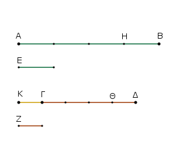
῎Εστω γὰρ πρότερον τὸ ΗΒ τῷ Ε ἴσον· λέγω, ὅτι καὶ τὸ ΘΔ τῷ Ζ ἴσον ἐστίν.
Κείσθω γὰρ τῷ Ζ ἴσον τὸ ΓΚ. ἐπεὶ ἰσάκις ἐστὶ πολλαπλάσιον τὸ ΑΗ τοῦ Ε καὶ τὸ ΓΘ τοῦ Ζ, ἴσον δὲ τὸ μὲν ΗΒ τῷ Ε, τὸ δὲ ΚΓ τῷ Ζ, ἰσάκις ἄρα ἐστὶ πολλαπλάσιον τὸ ΑΒ τοῦ Ε καὶ τὸ ΚΘ τοῦ Ζ. ἰσάκις δὲ ὑπόκειται πολλαπλάσιον τὸ ΑΒ τοῦ Ε καὶ τὸ ΓΔ τοῦ Ζ· ἴσάκις ἄρα ἐστὶ πολλαπλάσιον τὸ ΚΘ τοῦ Ζ καὶ τὸ ΓΔ τοῦ Ζ.
ἐπεὶ οὖν ἑκάτερον τῶν ΚΘ, ΓΔ τοῦ Ζ ἰσάκις ἐστὶ πολλαπλάσιον, ἴσον ἄρα ἐστὶ τὸ ΚΘ τῷ ΓΔ. κοινὸν ἀφῃρήσθω τὸ ΓΘ· λοιπὸν ἄρα τὸ ΚΓ λοιπῷ τῷ ΘΔ ἴσον ἐστίν. ἀλλὰ τὸ Ζ τῷ ΚΓ ἐστιν ἴσον· καὶ τὸ ΘΔ ἄρα τῷ Ζ ἴσον ἐστίν.
ὥστε εἰ τὸ ΗΒ τῷ Ε ἴσον ἐστίν, καὶ τὸ ΘΔ ἴσον ἔσται τῷ Ζ. ῾Ομοίως δὴ δείξομεν, ὅτι, κᾂν πολλαπλάσιον ᾖ τὸ ΗΒ τοῦ Ε, τοσαυταπλάσιον ἔσται καὶ τὸ ΘΔ τοῦ Ζ.
᾿Εὰν ἄρα δύο μεγέθη δύο μεγεθῶν ἰσάκις ᾖ πολλαπλάσια, καὶ ἀφαιρεθέντα τινὰ τῶν αὐτῶν ἰσάκις ᾖ πολλαπλάσια, καὶ τὰ λοιπὰ τοῖς αὐτοῖς ἤτοι ἴσα ἐστὶν ἢ ἰσάκις αὐτῶν πολλαπλάσια· ὅπερ ἔδει δεῖξαι.
Τὰ ἴσα πρὸς τὸ αὐτὸ τὸν αὐτὸν ἔχει λόγον καὶ τὸ αὐτὸ πρὸς τὰ ἴσα.
῎Εστω ἴσα μεγέθη τὰ Α, Β, ἄλλο δέ τι, ὃ ἔτυχεν, μέγεθος τὸ Γ· λέγω, ὅτι ἑκάτερον τῶν Α, Β πρὸς τὸ Γ τὸν αὐτὸν ἔχει λόγον, καὶ τὸ Γ πρὸς ἑκάτερον τῶν Α, Β.
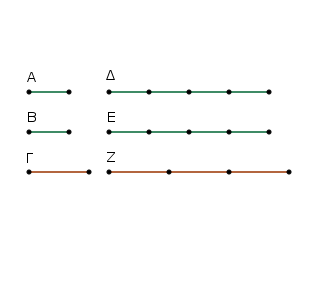
Εἰλήφθω γὰρ τῶν μὲν Α, Β ἰσάκις πολλαπλάσια τὰ Δ, Ε, τοῦ δὲ Γ ἄλλο, ὃ ἔτυχεν, πολλαπλάσιον τὸ Ζ.
᾿Επεὶ οὖν ἰσάκις ἐστὶ πολλαπλάσιον τὸ Δ τοῦ Α καὶ τὸ Ε τοῦ Β, ἴσον δὲ τὸ Α τῷ Β, ἴσον ἄρα καὶ τὸ Δ τῷ Ε. ἄλλο δέ, ὅ ἔτυχεν, τὸ Ζ. Εἰ ἄρα ὑπερέχει τὸ Δ τοῦ Ζ, ὑπερέχει καὶ τὸ Ε τοῦ Ζ, καὶ εἰ ἴσον, ἴσον, καὶ εἰ ἔλαττον, ἔλαττον.
καί ἐστι τὰ μὲν Δ, Ε τῶν Α, Β ἰσάκις πολλαπλάσια, τὸ δὲ Ζ τοῦ Γ ἄλλο, ὃ ἔτυχεν, πολλαπλάσιον· ἔστιν ἄρα ὡς τὸ Α πρὸς τὸ Γ, οὕτως τὸ Β πρὸς τὸ Γ. Λέγω [δή], ὅτι καὶ τὸ Γ πρὸς ἑκάτερον τῶν Α, Β τὸν αὐτὸν ἔχει λόγον.
Τῶν γὰρ αὐτῶν κατασκευασθέντων ὁμοίως δείξομεν, ὅτι ἴσον ἐστὶ τὸ Δ τῷ Ε· ἄλλο δέ τι τὸ Ζ· εἰ ἄρα ὑπερέχει τὸ Ζ τοῦ Δ, ὑπερέχει καὶ τοῦ Ε, καὶ εἰ ἴσον, ἴσον, καὶ εἰ ἔλαττον, ἔλαττον. καί ἐστι τὸ μὲν Ζ τοῦ Γ πολλαπλάσιον, τὰ δὲ Δ, Ε τῶν Α, Β ἄλλα, ἃ ἔτυχεν, ἰσάκις πολλαπλάσια· ἔστιν ἄρα ὡς τὸ Γ πρὸς τὸ Α, οὕτως τὸ Γ πρὸς τὸ Β.
Τὰ ἴσα ἄρα πρὸς τὸ αὐτὸ τὸν αὐτὸν ἔχει λόγον καὶ τὸ αὐτὸ πρὸς τὰ ἴσα.
Πόρισμα ᾿Εκ δὴ τούτου φανερόν, ὅτι ἐὰν μεγέθη τινὰ ἀνάλογον ᾖ, καὶ ἀνάπαλιν ἀνάλογον ἔσται. ὅπερ ἔδει δεῖξαι.
Τῶν ἀνίσων μεγεθῶν τὸ μεῖζον πρὸς τὸ αὐτὸ μείζονα λόγον ἔχει ἤπερ τὸ ἔλαττον. καὶ τὸ αὐτὸ πρὸς τὸ ἔλαττον μείζονα λόγον ἔχει ἤπερ πρὸς τὸ μεῖζον.
῎Εστω ἄνισα μεγέθη τὰ ΑΒ, Γ, καὶ ἔστω μεῖζον τὸ ΑΒ, ἄλλο δέ, ὃ ἔτυχεν, τὸ Δ· λέγω, ὅτι τὸ ΑΒ πρὸς τὸ Δ μείζονα λόγον ἔχει ἤπερ τὸ Γ πρὸς τὸ Δ, καὶ τὸ Δ πρὸς τὸ Γ μείζονα λόγον ἔχει ἤπερ πρὸς τὸ ΑΒ.
᾿Επεὶ γὰρ μεῖζόν ἐστι τὸ ΑΒ τοῦ Γ, κείσθω τῷ Γ ἴσον τὸ ΒΕ· τὸ δὴ ἔλασσον τῶν ΑΕ, ΕΒ πολλαπλασιαζόμενον ἔσται ποτὲ τοῦ Δ μεῖζον.
ἔστω πρότερον τὸ ΑΕ ἔλαττον τοῦ ΕΒ, καὶ πεπολλαπλασιάσθω τὸ ΑΕ, καὶ ἔστω αὐτοῦ πολλαπλάσιον τὸ ΖΗ μεῖζον ὂν τοῦ Δ, καὶ ὁσαπλάσιόν ἐστι τὸ ΖΗ τοῦ ΑΕ, τοσαυταπλάσιον γεγονέτω καὶ τὸ μὲν ΗΘ τοῦ ΕΒ τὸ δὲ Κ τοῦ Γ·
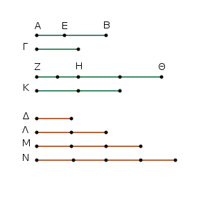
καὶ εἰλήφθω τοῦ Δ διπλάσιον μὲν τὸ Λ, τριπλάσιον δὲ τὸ Μ, καὶ ἑξῆς ἑνὶ πλεῖον, ἕως ἂν τὸ λαμβανόμενον πολλαπλάσιον μὲν γένηται τοῦ Δ, πρώτως δὲ μεῖζον τοῦ Κ. εἰλήφθω, καὶ ἔστω τὸ Ν τετραπλάσιον μὲν τοῦ Δ, πρώτως δὲ μεῖζον τοῦ Κ.
᾿Επεὶ οὖν τὸ Κ τοῦ Ν πρώτως ἐστὶν ἔλαττον, τὸ Κ ἄρα τοῦ Μ οὔκ ἐστιν ἔλαττον. καὶ ἐπεὶ ἰσάκις ἐστὶ πολλαπλάσιον τὸ ΖΗ τοῦ ΑΕ καὶ τὸ ΗΘ τοῦ ΕΒ, ἰσάκις ἄρα ἐστὶ πολλαπλάσιον τὸ ΖΗ τοῦ ΑΕ καὶ τὸ ΖΘ τοῦ ΑΒ.
ἰσάκις δέ ἐστι πολλαπλάσιον τὸ ΖΗ τοῦ ΑΕ καὶ τὸ Κ τοῦ Γ· ἰσάκις ἄρα ἐστὶ πολλαπλάσιον τὸ ΖΘ τοῦ ΑΒ καὶ τὸ Κ τοῦ Γ. τὰ ΖΘ, Κ ἄρα τῶν ΑΒ, Γ ἰσάκις ἐστὶ πολλαπλάσια.
πάλιν, ἐπεὶ ἰσάκις ἐστὶ πολλαπλάσιον τὸ ΗΘ τοῦ ΕΒ καὶ τὸ Κ τοῦ Γ, ἴσον δὲ τὸ ΕΒ τῷ Γ, ἴσον ἄρα καὶ τὸ ΗΘ τῷ Κ. τὸ δὲ Κ τοῦ Μ οὔκ ἐστιν ἔλαττον· οὐδ᾿ ἄρα τὸ ΗΘ τοῦ Μ ἔλαττόν ἐστιν. μεῖζον δὲ τὸ ΖΗ τοῦ Δ· ὅλον ἄρα τὸ ΖΘ συναμφοτέρων τῶν Δ, Μ μεῖζόν ἐστιν. ἀλλὰ συναμφότερα τὰ Δ, Μ τῷ Ν ἐστιν ἴσα, ἐπειδήπερ τὸ Μ τοῦ Δ τριπλάσιόν ἐστιν, συναμφότερα δὲ τὰ Μ, Δ τοῦ Δ ἐστι τετραπλάσια, ἔστι δὲ καὶ τὸ Ν τοῦ Δ τετραπλάσιον· συναμφότερα ἄρα τὰ Μ, Δ τῷ Ν ἴσα ἐστίν.
ἀλλὰ τὸ ΖΘ τῶν Μ, Δ μεῖζόν ἐστιν· τὸ ΖΘ ἄρα τοῦ Ν ὑπερέχει· τὸ δὲ Κ τοῦ Ν οὐχ ὑπερέχει. καί ἐστι τὰ μὲν ΖΘ, Κ τῶν ΑΒ, Γ ἰσάκις πολλαπλάσια, τὸ δὲ Ν τοῦ Δ ἄλλο, ὃ ἔτυχεν, πολλαπλάσιον· τὸ ΑΒ ἄρα πρὸς τὸ Δ μείζονα λόγον ἔχει ἤπερ τὸ Γ πρὸς τὸ Δ. Λέγω δή, ὅτι καὶ τὸ Δ πρὸς τὸ Γ μείζονα λόγον ἔχει ἤπερ τὸ Δ πρὸς τὸ ΑΒ.
Τῶν γὰρ αὐτῶν κατασκευασθέντων ὁμοίως δείξομεν, ὅτι τὸ μὲν Ν τοῦ Κ ὑπερέχει, τὸ δὲ Ν τοῦ ΖΘ οὐχ ὑπερέχει. καί ἐστι τὸ μὲν Ν τοῦ Δ πολλαπλάσιον, τὰ δὲ ΖΘ, Κ τῶν ΑΒ, Γ ἄλλα, ἃ ἔτυχεν, ἰσάκις πολλαπλάσια·
τὸ Δ ἄρα πρὸς τὸ Γ μείζονα λόγον ἔχει ἤπερ τὸ Δ πρὸς τὸ ΑΒ. ᾿Αλλὰ δὴ τὸ ΑΕ τοῦ ΕΒ μεῖζον ἔστω. τὸ δὴ ἔλαττον τὸ ΕΒ πολλαπλασιαζόμενον ἔσται ποτὲ τοῦ Δ μεῖζον. πεπολλαπλασιάσθω, καὶ ἔστω τὸ ΗΘ πολλαπλάσιον μὲν τοῦ ΕΒ, μεῖζον δὲ τοῦ Δ· καὶ ὁσαπλάσιόν ἐστι τὸ ΗΘ τοῦ ΕΒ, τοσαυταπλάσιον γεγονέτω καὶ τὸ μὲν ΖΗ τοῦ ΑΕ, τὸ δὲ Κ τοῦ Γ.
ὁμοίως δὴ δείξομεν, ὅτι τὰ ΖΘ, Κ τῶν ΑΒ, Γ ἰσάκις ἐστὶ πολλαπλάσια· καὶ εἰλήφθω ὁμοίως τὸ Ν πολλαπλάσιον μὲν τοῦ Δ, πρώτως δὲ μεῖζον τοῦ ΖΗ· ὥστε πάλιν τὸ ΖΗ τοῦ Μ οὔκ ἐστιν ἔλασσον. μεῖζον δὲ τὸ ΗΘ τοῦ Δ· ὅλον ἄρα τὸ ΖΘ τῶν Δ, Μ, τουτέστι τοῦ Ν, ὑπερέχει. τὸ δὲ Κ τοῦ Ν οὐχ ὑπερέχει, ἐπειδήπερ καὶ τὸ ΖΗ μεῖζον ὂν τοῦ ΗΘ, τουτέστι τοῦ Κ, τοῦ Ν οὐχ ὑπερέχει. καὶ ὡσαύτως κατακολουθοῦντες τοῖς ἐπάνω περαίνομεν τὴν ἀπόδειξιν.
Τῶν ἄρα ἀνίσων μεγεθῶν τὸ μεῖζον πρὸς τὸ αὐτὸ μείζονα λόγον ἔχει ἤπερ τὸ ἔλαττον· καὶ τὸ αὐτὸ πρὸς τὸ ἔλαττον μείζονα λόγον ἔχει ἤπερ πρὸς τὸ μεῖζον· ὅπερ ἔδει δεῖξαι.
Τὰ πρὸς τὸ αὐτὸ τὸν αὐτὸν ἔχοντα λὸγον ἴσα ἀλλήλοις ἐστίν· καὶ πρὸς ἃ τὸ αὐτὸ τὸν αὐτὸν ἕχει λόγον, ἐκεῖνα ἴσα ἐστίν.
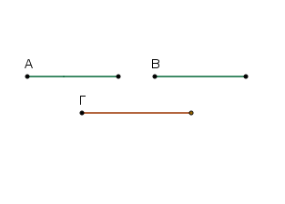
᾿Εχέτω γὰρ ἑκάτερον τῶν Α, Β πρὸς τὸ Γ τὸν αὐτὸν λόγον· λέγω, ὅτι ἴσον ἐστὶ τὸ Α τῷ Β. Εἰ γὰρ μή, οὐκ ἂν ἑκάτερον τῶν Α, Β πρὸς τὸ Γ τὸν αὐτὸν εἶχε λόγον· ἔχει δέ· ἴσον ἄρα ἐστὶ τὸ Α τῷ Β.
᾿Εχέτω δὴ πάλιν τὸ Γ πρὸς ἑκάτερον τῶν Α, Β τὸν αὐτὸν λόγον· λέγω, ὅτι ἴσον ἐστὶ τὸ Α τῷ Β. Εἰ γὰρ μή, οὐκ ἂν τὸ Γ πρὸς ἑκάτερον τῶν Α, Β τὸν αὐτὸν εἶχε λόγον· ἔχει δέ· ἴσον ἄρα ἐστὶ τὸ Α τῷ Β.
Τὰ ἄρα πρὸς τὸ αὐτὸ τὸν αὐτὸν ἔχοντα λόγον ἴσα ἀλλήλοις ἐστίν· καὶ πρὸς ἃ τὸ αὐτὸ τὸν αὐτὸν ἔχει λόγον, ἐκεῖνα ἴσα ἐστίν· ὅπερ ἔδει δεῖξαι.
Τῶν πρὸς τὸ αὐτὸ λόγον ἐχόντων τὸ μείζονα λόγον ἔχον ἐκεῖνο μεῖζόν ἐστιν· πρὸς ὃ δὲ τὸ αὐτὸ μείζονα λόγον ἔχει, ἐκεῖνο ἔλαττόν ἐστιν.
᾿Εχέτω γὰρ τὸ Α πρὸς τὸ Γ μείζονα λόγον ἤπερ τὸ Β πρὸς τὸ Γ· λέγω, ὅτι μεῖζόν ἐστι τὸ Α τοῦ Β. Εἰ γὰρ μή, ἤτοι ἴσον ἐστὶ τὸ Α τῷ Β ἢ ἔλασσον. ἴσον μὲν οὖν οὔκ ἐστὶ τὸ Α τῷ Β· ἑκάτερον γὰρ ἂν τῶν Α, Β πρὸς τὸ Γ τὸν αὐτὸν εἶχε λόγον. οὐκ ἔχει δέ· οὐκ ἄρα ἴσον ἐστὶ τὸ Α τῷ Β. οὐδὲ μὴν ἔλασσόν ἐστι τὸ Α τοῦ Β· τὸ Α γὰρ ἂν πρὸς τὸ Γ ἐλάσσονα λόγον εἶχεν ἤπερ τὸ Β πρὸς τὸ Γ. οὐκ ἔχει δέ· οὐκ ἄρα ἔλασσόν ἐστι τὸ Α τοῦ Β. ἐδείχθη δὲ οὐδὲ ἴσον· μεῖζον ἄρα ἐστὶ τὸ Α τοῦ Β.
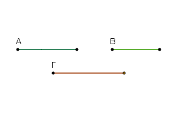
᾿Εχέτω δὴ πάλιν τὸ Γ πρὸς τὸ Β μείζονα λόγον ἤπερ τὸ Γ πρὸς τὸ Α· λέγω, ὅτι ἔλασσόν ἐστι τὸ Β τοῦ Α. Εἰ γὰρ μή, ἤτοι ἴσον ἐστὶν ἢ μεῖζον. ἴσον μὲν οὖν οὔκ ἐστι τὸ Β τῷ Α· τὸ Γ γὰρ ἂν πρὸς ἑκάτερον τῶν Α, Β τὸν αὐτὸν εἶχε λόγον. οὐκ ἔχει δέ· οὐκ ἄρα ἴσον ἐστὶ τὸ Α τῷ Β. οὐδὲ μὴν μεῖζόν ἐστι τὸ Β τοῦ Α· τὸ Γ γὰρ ἂν πρὸς τὸ Β ἐλάσσονα λόγον εἶχεν ἤπερ πρὸς τὸ Α. οὐκ ἔχει δέ· οὐκ ἄρα μεῖζόν ἐστι τὸ Β τοῦ Α. ἐδείχθη δέ, ὅτι οὐδὲ ἴσον· ἔλαττον ἄρα ἐστὶ τὸ Β τοῦ Α.
Τῶν ἄρα πρὸς τὸ αὐτὸ λόγον ἐχόντων τὸ μείζονα λόγον ἔχον μεῖζόν ἐστιν· καὶ πρὸς ὃ τὸ αὐτὸ μείζονα λόγον ἔχει, ἐκεῖνο ἔλαττόν ἐστιν· ὅπερ ἔδει δεῖξαι.
Οἱ τῷ αὐτῷ λόγῳ οἱ αὐτοὶ καὶ ἀλλήλοις εἰσὶν οἱ αὐτοί.
῎Εστωσαν γὰρ ὡς μὲν τὸ Α πρὸς τὸ Β, οὕτως τὸ Γ πρὸς τὸ Δ, ὡς δὲ τὸ Γ πρὸς τὸ Δ, οὕτως τὸ Ε πρὸς τὸ Ζ· λέγω, ὅτι ἐστὶν ὡς τὸ Α πρὸς τὸ Β, οὕτως τὸ Ε πρὸς τὸ Ζ.
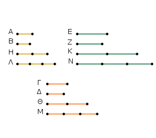
Εἰλήφθω γὰρ τῶν Α, Γ, Ε ἰσάκις πολλαπλάσια τὰ Η, Θ, Κ, τῶν δὲ Β, Δ, Ζ ἄλλα, ἃ ἔτυχεν, ἰσάκις πολλαπλάσια τὰ Λ, Μ, Ν. Καὶ ἐπεί ἐστιν ὡς τὸ Α πρὸς τὸ Β, οὕτως τὸ Γ πρὸς τὸ Δ, καὶ εἴληπται τῶν μὲν Α, Γ ἰσάκις πολλαπλάσια τὰ Η, Θ, τῶν δὲ Β, Δ ἄλλα, ἃ ἔτυχεν, ἰσάκις πολλαπλάσια τὰ Λ, Μ, εἰ ἄρα ὑπερέχει τὸ Η τοῦ Λ, ὑπερέχει καὶ τὸ Θ τοῦ Μ, καὶ εἰ ἴσον ἐστίν, ἴσον, καὶ εἰ ἐλλείπει, ἐλλείπει.
πάλιν, ἐπεί ἐστιν ὡς τὸ Γ πρὸς τὸ Δ, οὕτως τὸ Ε πρὸς τὸ Ζ, καὶ εἴληπται τῶν Γ, Ε ἰσάκις πολλαπλάσια τὰ Θ, Κ, τῶν δὲ Δ, Ζ ἄλλα, ἃ ἔτυχεν, ἰσάκις πολλαπλάσια τὰ Μ, Ν, εἰ ἄρα ὑπερέχει τὸ Θ τοῦ Μ, ὑπερέχει καὶ τὸ Κ τοῦ Ν, καὶ εἰ ἴσον, ἴσον, καὶ εἰ ἔλλατον, ἔλαττον. ἀλλὰ εἰ ὑπερεῖχε τὸ Θ τοῦ Μ, ὑπερεῖχε καὶ τὸ Η τοῦ Λ, καὶ εἰ ἴσον, ἴσον, καὶ εἰ ἔλαττον, ἔλαττον· ὥστε καὶ εἰ ὑπερέχει τὸ Η τοῦ Λ, ὑπερέχει καὶ τὸ Κ τοῦ Ν, καὶ εἰ ἴσον, ἴσον, καὶ εἰ ἔλαττον, ἔλαττον. καί ἐστι τὰ μὲν Η, Κ τῶν Α, Ε ἰσάκις πολλαπλάσια, τὰ δὲ Λ, Ν τῶν Β, Ζ ἄλλα, ἃ ἔτυχεν, ἰσάκις πολλαπλάσια· ἔστιν ἄρα ὡς τὸ Α πρὸς τὸ Β, οὕτως τὸ Ε πρὸς τὸ Ζ.
Οἱ ἄρα τῷ αὐτῷ λόγῳ οἱ αὐτοὶ καὶ ἀλλήλοις εἰσὶν οἱ αὐτοί· ὅπερ ἔδει δεῖξαι.
᾿Εὰν ᾖ ὁποσαοῦν μεγέθη ἀνάλογον, ἔσται ὡς ἓν τῶν ἡγουμένων πρὸς ἓν τῶν ἑπομένων, οὕτως ἅπαντα τὰ ἡγούμενα πρὸς ἅπαντα τὰ ἑπόμενα.
῎Εστωσαν ὁποσαοῦν μεγέθη ἀνάλογον τὰ Α, Β, Γ, Δ, Ε, Ζ, ὡς τὸ Α πρὸς τὸ Β, οὕτως τὸ Γ πρὸς τὸ Δ, καὶ τὸ Ε πρὸς το Ζ· λέγω, ὅτι ἐστὶν ὡς τὸ Α πρὸς τὸ Β, οὕτως τὰ Α, Γ, Ε πρὸς τὰ Β, Δ, Ζ.
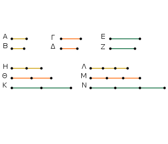
Εἰλήφθω γὰρ τῶν μὲν Α, Γ, Ε ἰσάκις πολλαπλάσια τὰ Η, Θ, Κ, τῶν δὲ Β, Δ, Ζ ἄλλα, ἃ ἔτυχεν, ἰσάκις πολλαπλάσια τὰ Λ, Μ, Ν.
Καὶ ἐπεί ἐστιν ὡς τὸ Α πρὸς τὸ Β, οὕτως τὸ Γ πρὸς τὸ Δ, καὶ τὸ Ε πρὸς τὸ Ζ, καὶ εἴληπται τῶν μὲν Α, Γ, Ε ἰσάκις πολλαπλάσια τὰ Η, Θ, Κ τῶν δὲ Β, Δ, Ζ ἄλλα, ἃ ἔτυχεν, ἰσάκις πολλαπλάσια τὰ Λ, Μ, Ν, εἰ ἄρα ὑπερέχει τὸ Η τοῦ Λ, ὑπερέχει καὶ τὸ Θ τοῦ Μ, καὶ τὸ Κ τοῦ Ν, καὶ εἰ ἴσον, ἴσον, καὶ εἰ ἔλαττον, ἔλαττον. ὥστε καὶ εἰ ὑπερέχει τὸ Η τοῦ Λ, ὑπερέχει καὶ τὰ Η, Θ, Κ τῶν Λ, Μ, Ν, καὶ εἰ ἴσον, ἴσα, καὶ εἰ ἔλαττον, ἔλαττονα. καί ἐστι τὸ μὲν Η καὶ τὰ Η, Θ, Κ τοῦ Α καὶ τῶν Α, Γ, Ε ἰσάκις πολλαπλάσια, ἐπειδήπερ ἐὰν ᾖ ὁποσαοῦν μεγέθη ὁποσωνοῦν μεγεθῶν ἴσων τὸ πλῆθος ἕκαστον ἑκάστου ἰσάκις πολλαπλάσιον, ὁσαπλάσιόν ἐστιν ἓν τῶν μεγεθῶν ἑνός, τοσαυταπλάσια ἔσται καὶ τὰ πάντα τῶν πάντων.
διὰ τὰ αὐτὰ δὴ καὶ τὸ Λ καὶ τὰ Λ, Μ, Ν τοῦ Β καὶ τῶν Β, Δ, Ζ ἰσάκις ἐστὶ πολλαπλάσια· ἔστιν ἄρα ὡς τὸ Α πρὸς τὸ Β, οὕτως τὰ Α, Γ, Ε πρὸς τὰ Β, Δ, Ζ.
᾿Εὰν ἄρα ᾖ ὁποσαοῦν μεγέθη ἀνάλογον, ἔσται ὡς ἓν τῶν ἡγουμένων πρὸς ἓν τῶν ἑπομένων, οὕτως ἅπαντα τὰ ἡγούμενα πρὸς ἅπαντα τὰ ἑπόμενα· ὅπερ ἔδει δεῖξαι.
᾿Εὰν πρῶτον πρὸς δεύτερον τὸν αὐτὸν ἒχῃ λόγον καὶ τρίτον πρὸς τέταρτον, τρίτον δὲ πρὸς τέταρτον μείζονα λόγον ἔχῃ ἢ πέμπτον πρὸς ἕκτον, καὶ πρῶτον πρὸς δεύτερον μείζονα λόγον ἕξει ἢ πέμπτον πρὸς ἕκτον.
Πρῶτον γὰρ τὸ Α πρὸς δεύτερον τὸ Β τὸν αὐτὸν ἐχέτω λόγον καὶ τρίτον τὸ Γ πρὸς τέταρτον τὸ Δ, τρίτον δὲ τὸ Γ πρὸς τέταρτον τὸ Δ μείζονα λόγον ἐχέτω ἢ πέμπτον τὸ Ε πρὸς ἕκτον τὸ Ζ. λέγω, ὅτι καὶ πρῶτον τὸ Α πρὸς δεύτερον τὸ Β μείζονα λόγον ἕξει ἤπερ πέμπτον τὸ Ε πρὸς ἕκτον τὸ Ζ.
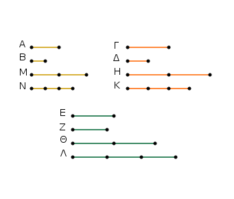
᾿Επεὶ γὰρ ἔστι τινὰ τῶν μὲν Γ, Ε ἰσάκις πολλαπλάσια, τῶν δὲ Δ, Ζ ἄλλα, ἃ ἔτυχεν, ἰσάκις πολλαπλάσια, καὶ τὸ μὲν τοῦ Γ πολλαπλάσιον τοῦ τοῦ Δ πολλαπλασίου ὑπερέχει, τὸ δὲ τοῦ Ε πολλαπλάσιον τοῦ τοῦ Ζ πολλαπλασίου οὐχ ὑπερέχει, εἰλήφθω, καὶ ἔστω τῶν μὲν Γ, Ε ἰσάκις πολλαπλάσια τὰ Η, Θ, τῶν δὲ Δ, Ζ ἄλλα, ἃ ἔτυχεν, ἰσάκις πολλαπλάσια τὰ Κ, Λ, ὥστε τὸ μὲν Η τοῦ Κ ὑπερέχειν, τὸ δὲ Θ τοῦ Λ μὴ ὑπερέχειν· καὶ ὁσαπλάσιον μέν ἐστι τὸ Η τοῦ Γ, τοσαυταπλάσιον ἔστω καὶ τὸ Μ τοῦ Α, ὁσαπλάσιον δὲ τὸ Κ τοῦ Δ, τοσαυταπλάσιον ἔστω καὶ τὸ Ν τοῦ Β.
Καὶ ἐπεί ἐστιν ὡς τὸ Α πρὸς τὸ Β, οὕτως τὸ Γ πρὸς τὸ Δ, καὶ εἴληπται τῶν μὲν Α, Γ ἰσάκις πολλαπλάσια τὰ Μ, Η, τῶν δὲ Β, Δ ἄλλα, ἃ ἔτυχεν, ἰσάκις πολλαπλάσια τὰ Ν, Κ, εἰ ἄρα ὑπερέχει τὸ Μ τοῦ Ν, ὑπερέχει καὶ τὸ Η τοῦ Κ, καὶ εἰ ἴσον, ἴσον, καὶ εἰ ἔλαττον, ἔλλατον.
ὑπερέχει δὲ τὸ Η τοῦ Κ· ὑπερέχει ἄρα καὶ τὸ Μ τοῦ Ν. τὸ δὲ Θ τοῦ Λ οὐχ ὑπερέχει· καί ἐστι τὰ μὲν Μ, Θ τῶν Α, Ε ἰσάκις πολλαπλάσια, τὰ δὲ Ν, Λ τῶν Β, Ζ ἄλλα, ἃ ἔτυχεν, ἰσάκις πολλαπλάσια· τὸ ἄρα Α πρὸς τὸ Β μείζονα λόγον ἔχει ἤπερ τὸ Ε πρὸς τὸ Ζ.
᾿Εὰν ἄρα πρῶτον πρὸς δεύτερον τὸν αὐτὸν ἒχῃ λόγον καὶ τρίτον πρὸς τέταρτον, τρίτον δὲ πρὸς τέταρτον μείζονα λόγον ἔχῃ ἢ πέμπτον πρὸς ἕκτον, καὶ πρῶτον πρὸς δεύτερον μείζονα λόγον ἕξει ἢ πέμπτον πρὸς ἕκτον· ὅπερ ἔδει δεῖξαι.
᾿Εὰν πρῶτον πρὸς δεύτερον τὸν αὐτὸν ἔχῃ λόγον καὶ τρίτον πρὸς τέταρτον, τὸ δὲ πρῶτον τοῦ τρίτου μεῖζον ᾖ, καὶ τὸ δεύτερον τοῦ τετάρτου μεῖζον ἔσται, κἂν ἴσον, ἴσον, κἂν ἔλαττον, ἔλαττον.
Πρῶτον γὰρ τὸ Α πρὸς δεύτερον τὸ Β αὐτὸν ἐχέτω λόγον καὶ τρίτον τὸ Γ πρὸς τέταρτον τὸ Δ, μεῖζον δὲ ἔστω τὸ Α τοῦ Γ· λέγω, ὅτι καὶ τὸ Β τοῦ Δ μεῖζόν ἐστιν.
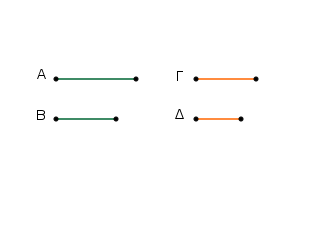
᾿Επεὶ γὰρ τὸ Α τοῦ Γ μεῖζόν ἐστιν, ἄλλο δέ, ὃ ἔτυχεν, [μέγεθος] τὸ Β, τὸ Α ἄρα πρὸς τὸ Β μείζονα λόγον ἔχει ἤπερ τὸ Γ πρὸς τὸ Β. ὡς δὲ τὸ Α πρὸς τὸ Β, οὕτως τὸ Γ πρὸς τὸ Δ· καὶ τὸ Γ ἄρα πρὸς τὸ Δ μείζονα λόγον ἔχει ἤπερ τὸ Γ πρὸς τὸ Β. πρὸς ὃ δὲ τὸ αὐτὸ μείζονα λόγον ἔχει, ἐκεῖνο ἔλασσόν ἐστιν· ἔλασσον ἄρα τὸ Δ τοῦ Β· ὥστε μεῖζόν ἐστι τὸ Β τοῦ Δ.
῾Ομοίως δὴ δεῖξομεν, ὅτι κἂν ἴσον ᾖ τὸ Α τῷ Γ, ἴσον ἔσται καὶ τὸ Β τῷ Δ, κἄν ἔλασσον ᾖ τὸ Α τοῦ Γ, ἔλασσον ἔσται καὶ τὸ Β τοῦ Δ.
᾿Εὰν ἄρα πρῶτον πρὸς δεύτερον τὸν αὐτὸν ἔχῃ λόγον καὶ τρίτον πρὸς τέταρτον, τὸ δὲ πρῶτον τοῦ τρίτου μεῖζον ᾖ, καὶ τὸ δεύτερον τοῦ τετάρτου μεῖζον ἔσται, κἂν ἴσον, ἴσον, κἂν ἔλαττον, ἔλαττον· ὅπερ ἔδει δεῖξαι.
Τὰ μέρη τοῖς ὡσαύτως πολλαπλασίοις τὸν αὐτὸν ἔχει λόγον ληφθέντα κατάλληλα.
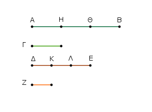
῎Εστω γὰρ ἰσάκις πολλαπλάσιον τὸ ΑΒ τοῦ Γ καὶ το ΔΕ τοῦ Ζ· λέγω, ὅτι ἐστὶν ὡς τὸ Γ πρὸς τὸ Ζ, οὕτως τὸ ΑΒ πρὸς τὸ ΔΕ.
᾿Επεὶ γὰρ ἰσάκις ἐστὶ πολλαπλάσιον τὸ ΑΒ τοῦ Γ καὶ τὸ ΔΕ τοῦ Ζ, ὅσα ἄρα ἐστὶν ἐν τῷ ΑΒ μεγέθη ἴσα τῷ Γ, τοσαῦτα καὶ ἐν τῷ ΔΕ ἴσα τῷ Ζ. διῃρήσθω τὸ μὲν ΑΒ εἰς τὰ τῷ Γ ἴσα τὰ ΑΗ, ΗΘ, ΘΒ, τὸ δὲ ΔΕ εἰς τὰ τῷ Ζ ἴσα τὰ ΔΚ, ΚΛ, ΛΕ· ἔσται δὴ ἴσον τὸ πλῆθος τῶν ΑΗ, ΗΘ, ΘΒ τῷ πλήθει τῶν ΔΚ, ΚΛ, ΛΕ.
καὶ ἐπεὶ ἴσα ἐστὶ τὰ ΑΗ, ΗΘ, ΘΒ ἀλλήλοις, ἔστι δὲ καὶ τὰ ΔΚ, ΚΛ, ΛΕ ἴσα ἀλλήλοις, ἔστιν ἄρα ὡς τὸ ΑΗ πρὸς τὸ ΔΚ, οὕτως τὸ ΗΘ πρὸς τὸ ΚΛ, καὶ τὸ ΘΒ πρὸς τὸ ΛΕ. ἔσται ἄρα καὶ ὡς ἓν τῶν ἡγουμένων πρὸς ἓν τῶν ἑπομένων, οὕτως ἅπαντα τὰ ἡγουμένα πρὸς ἅπαντα τὰ ἑπόμενα· ἔστιν ἄρα ὡς τὸ ΑΗ πρὸς τὸ ΔΚ, οὕτως τὸ ΑΒ πρὸς τὸ ΔΕ. ἴσον δὲ τὸ μὲν ΑΗ τῷ Γ, τὸ δὲ ΔΚ τῷ Ζ· ἔστιν ἄρα ὡς τὸ Γ πρὸς τὸ Ζ οὕτως τὸ ΑΒ πρὸς τὸ ΔΕ.
Τὰ ἄρα μέρη τοῖς ὡσαύτως πολλαπλασίοις τὸν αὐτὸν ἔχει λόγον ληφθέντα κατάλληλα· ὅπερ ἔδει δεῖξαι.
᾿Εὰν τέσσαρα μεγέθη ἀνάλογον ᾖ, καὶ ἐναλλὰξ ἀνάλογον ἔσται.
῎Εστω τέσσαρα μεγέθη ἀνάλογον τὰ Α, Β, Γ, Δ, ὡς τὸ Α πρὸς τὸ Β, οὕτως τὸ Γ πρὸς τὸ Δ· λέγω, ὅτι καὶ ἐναλλὰξ [ἀνάλογον] ἔσται, ὡς τὸ Α πρὸς τὸ Γ, οὕτως τὸ Β πρὸς τὸ Δ.
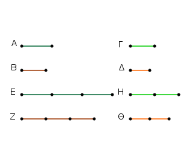
Εἰλήφθω γὰρ τῶν μὲν Α, Β ἰσάκις πολλαπλάσια τὰ Ε, Ζ, τῶν δὲ Γ, Δ ἄλλα, ἃ ἔτυχεν, ἰσάκις πολλαπλάσια τὰ Η, Θ.
Καὶ ἐπεὶ ἰσάκις ἐστὶ πολλαπλάσιον τὸ Ε τοῦ Α καὶ τὸ Ζ τοῦ Β, τὰ δὲ μέρη τοῖς ὡσαύτως πολλαπλασίοις τὸν αὐτὸν ἔχει λόγον, ἔστιν ἄρα ὡς τὸ Α πρὸς τὸ Β, οὕτως τὸ Ε πρὸς τὸ Ζ. ὡς δὲ τὸ Α πρὸς τὸ Β, οὕτως τὸ Γ πρὸς τὸ Δ· καὶ ὡς ἄρα τὸ Γ πρὸς τὸ Δ, οὕτως τὸ Ε πρὸς τὸ Ζ.
πάλιν, ἐπεὶ τὰ Η, Θ τῶν Γ, Δ ἰσάκις ἐστὶ πολλαπλάσια, ἔστιν ἄρα ὡς τὸ Γ πρὸς τὸ Δ, οὕτως τὸ Η πρὸς τὸ Θ. ὡς δὲ τὸ Γ πρὸς τὸ Δ, [οὕτως] τὸ Ε πρὸς τὸ Ζ· καὶ ὡς ἄρα τὸ Ε πρὸς τὸ Ζ, οὕτως τὸ Η πρὸς τὸ Θ. ἐὰν δὲ τέσσαρα μεγέθη ἀνάλογον ᾖ, τὸ δὲ πρῶτον τοῦ τρίτου μεῖζον ᾖ, καὶ τὸ δεύτερον τοῦ τετάρτου μεῖζον ἔσται, κἂν ἴσον, ἴσον, κἄν ἔλαττον, ἔλαττον. εἰ ἄρα ὑπερέχει τὸ Ε τοῦ Η, ὑπερέχει καὶ τὸ Ζ τοῦ Θ, καὶ εἰ ἴσον, ἴσον, καὶ εἰ ἔλαττον, ἔλαττον. καί ἐστι τὰ μὲν Ε, Ζ τῶν Α, Β ἰσάκις πολλαπλάσια, τὰ δὲ Η, Θ τῶν Γ, Δ ἄλλα, ἃ ἔτυχεν, ἰσάκις πολλαπλάσια· ἔστιν ἄρα ὡς τὸ Α πρὸς τὸ Γ, οὕτως τὸ Β πρὸς τὸ Δ.
᾿Εὰν ἄρα τέσσαρα μεγέθη ἀνάλογον ᾖ, καὶ ἐναλλὰξ ἀνάλογον ἔσται· ὅπερ ἔδει δεῖξαι.
᾿Εὰν συγκείμενα μεγέθη ἀνάλογον ᾖ, καὶ διαιρεθέντα ἀνάλογον ἔσται.
῎Εστω συγκείμενα μεγέθη ἀνάλογον τὰ ΑΒ, ΒΕ, ΓΔ, ΔΖ, ὡς τὸ ΑΒ πρὸς τὸ ΒΕ, οὕτως τὸ ΓΔ πρὸς τὸ ΔΖ· λέγω, ὅτι καὶ διαιρεθέντα ἀνάλογον ἔσται, ὡς τὸ ΑΕ πρὸς τὸ ΕΒ, οὕτως τὸ ΓΖ πρὸς τὸ ΔΖ.
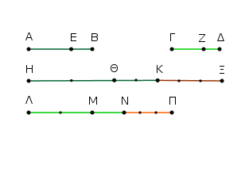
Εἰλήφθω γὰρ τῶν μὲν ΑΕ, ΕΒ, ΓΖ, ΖΔ ἰσάκις πολλαπλάσια τὰ ΗΘ, ΘΚ, ΛΜ, ΜΝ, τῶν δὲ ΕΒ, ΖΔ ἄλλα, ἃ ἔτυχεν, ἰσάκις πολλαπλάσια τὰ ΚΞ, ΝΠ.
Καὶ ἐπεὶ ἰσάκις ἐστὶ πολλαπλάσιον τὸ ΗΘ τοῦ ΑΕ καὶ τὸ ΘΚ τοῦ ΕΒ, ἰσάκις ἄρα ἐστὶ πολλαπλάσιον τὸ ΗΘ τοῦ ΑΕ καὶ τὸ ΗΚ τοῦ ΑΒ. ἰσάκις δέ ἐστι πολλαπλάσιον τὸ ΗΘ τοῦ ΑΕ καὶ τὸ ΛΜ τοῦ ΓΖ· ἰσάκις ἄρα ἐστὶ πολλαπλάσιον τὸ ΗΚ τοῦ ΑΒ καὶ τὸ ΛΜ τοῦ ΓΖ.
πάλιν, ἐπεὶ ἰσάκις ἐστὶ πολλαπλάσιον τὸ ΛΜ τοῦ ΓΖ καὶ τὸ ΜΝ τοῦ ΖΔ, ἰσάκις ἄρα ἐστὶ πολλαπλάσιον τὸ ΛΜ τοῦ ΓΖ καὶ τὸ ΛΝ τοῦ ΓΔ. ἰσάκις δὲ ἦν πολλαπλάσιον τὸ ΛΜ τοῦ ΓΖ καὶ τὸ ΗΚ τοῦ ΑΒ· ἰσάκις ἄρα ἐστὶ πολλαπλάσιον τὸ ΗΚ τοῦ ΑΒ καὶ τὸ ΛΝ τοῦ ΓΔ. τὰ ΗΚ, ΛΝ ἄρα τῶν ΑΒ, ΓΔ ἰσάκις ἐστὶ πολλαπλάσια.
πάλιν, ἐπεὶ ἰσάκις ἐστὶ πολλαπλασίον τὸ ΘΚ τοῦ ΕΒ καὶ τὸ ΜΝ τοῦ ΖΔ, ἔστι δὲ καὶ τὸ ΚΞ τοῦ ΕΒ ἰσάκις πολλαπλάσιον καὶ τὸ ΝΠ τοῦ ΖΔ, καὶ συντεθὲν τὸ ΘΞ τοῦ ΕΒ ἰσάκις ἐστὶ πολλαπλάσιον καὶ τὸ ΜΠ τοῦ ΖΔ. καὶ ἐπεί ἐστιν ὡς τὸ ΑΒ πρὸς τὸ ΒΕ, οὕτως τὸ ΓΔ πρὸς τὸ ΔΖ, καὶ εἴληπται τῶν μὲν ΑΒ, ΓΔ ἰσάκις πολλαπλάσια τὰ ΗΚ, ΛΝ, τῶν δὲ ΕΒ, ΖΔ ἰσάκις πολλαπλάσια τὰ ΘΞ, ΜΠ, εἰ ἄρα ὑπερέχει τὸ ΗΚ τοῦ ΘΞ, ὑπερέχει καὶ τὸ ΛΝ τοῦ ΜΠ, καὶ εἰ ἴσον, ἴσον, καὶ εἰ ἔλαττον, ἔλαττον.
ὑπερεχέτω δὴ τὸ ΗΚ τοῦ ΘΞ, καὶ κοινοῦ ἀφαιρεθέντος τοῦ ΘΚ ὑπερέχει ἄρα καὶ τὸ ΗΘ τοῦ ΚΞ. ἀλλα εἰ ὑπερεῖχε τὸ ΗΚ τοῦ ΘΞ ὑπερεῖχε καὶ τὸ ΛΝ τοῦ ΜΠ· ὑπερέχει ἄρα καὶ τὸ ΛΝ τοῦ ΜΠ, καὶ κοινοῦ ἀφαιρεθέντος τοῦ ΜΝ ὑπερέχει καὶ τὸ ΛΜ τοῦ ΝΠ· ὥστε εἰ ὑπερέχει τὸ ΗΘ τοῦ ΚΞ, ὑπερέχει καὶ τὸ ΛΜ τοῦ ΝΠ.
ὁμοίως δὴ δεῖξομεν, ὅτι κἂν ἴσον ᾖ τὸ ΗΘ τῷ ΚΞ, ἴσον ἔσται καὶ τὸ ΛΜ τῷ ΝΠ, κἂν ἔλαττον, ἔλαττον. καί ἐστι τὰ μὲν ΗΘ, ΛΜ τῶν ΑΕ, ΓΖ ἰσάκις πολλαπλάσια, τὰ δὲ ΚΞ, ΝΠ τῶν ΕΒ, ΖΔ ἄλλα, ἃ ἔτυχεν, ἰσάκις πολλαπλάσια· ἔστιν ἄρα ὡς τὸ ΑΕ πρὸς τὸ ΕΒ, οὕτως τὸ ΓΖ πρὸς τὸ ΖΔ.
᾿Εὰν ἄρα συγκείμενα μεγέθη ἀνάλογον ᾖ, καὶ διαιρεθέντα ἀνάλογον ἔσται· ὅπερ ἔδει δεῖξαι.
᾿Εὰν διῃρημένα μεγέθη ἀνάλογον ᾖ, καὶ συντεθέντα ἀνάλογον ἔσται.
῎Εστω διῃρημένα μεγέθη ἀνάλογον τὰ ΑΕ, ΕΒ, ΓΖ, ΖΔ, ὡς τὸ ΑΕ πρὸς τὸ ΕΒ, οὕτως τὸ ΓΖ πρὸς τὸ ΖΔ· λέγω, ὅτι καὶ συντεθέντα ἀνάλογον ἔσται, ὡς τὸ ΑΒ πρὸς τὸ ΒΕ, οὕτως τὸ ΓΔ πρὸς τὸ ΖΔ.
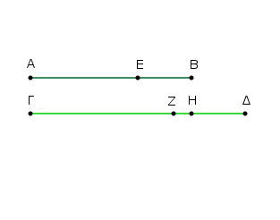
Εἰ γὰρ μή ἐστὶν ὡς τὸ ΑΒ πρὸς τὸ ΒΕ, οὕτως τὸ ΓΔ πρὸς τὸ ΔΖ, ἔσται ὡς τὸ ΑΒ πρὸς τὸ ΒΕ, οὕτως τὸ ΓΔ ἤτοι πρὸς ἔλασσόν τι τοῦ ΔΖ ἢ πρὸς μεῖζον.
῎Εστω πρότερον πρὸς ἔλασσον τὸ ΔΗ. καὶ ἐπεί ἐστιν ὡς τὸ ΑΒ πρὸς τὸ ΒΕ, οὕτως τὸ ΓΔ πρὸς τὸ ΔΗ, συγκείμενα μεγέθη ἀνάλογόν ἐστιν· ὥστε καὶ διαιρεθέντα ἀνάλογον ἔσται. ἔστιν ἄρα ὡς τὸ ΑΕ πρὸς τὸ ΕΒ, οὕτως τὸ ΓΗ πρὸς τὸ ΗΔ. ὑπόκειται δὲ καὶ ὡς τὸ ΑΕ πρὸς τὸ ΕΒ, οὕτως τὸ ΓΖ πρὸς τὸ ΖΔ. καὶ ὡς ἄρα τὸ ΓΗ πρὸς τὸ ΗΔ, οὕτως τὸ ΓΖ πρὸς τὸ ΖΔ. μεῖζον δὲ τὸ πρῶτον τὸ ΓΗ τοῦ τρίτου τοῦ ΓΖ· μεῖζον ἄρα καὶ τὸ δεύτερον τὸ ΗΔ τοῦ τετάρτου τοῦ ΖΔ. ἀλλὰ καὶ ἔλαττον· ὅπερ ἐστὶν ἀδύνατον· οὐκ ἄρα ἐστὶν ὡς τὸ ΑΒ πρὸς τὸ ΒΕ, οὕτως τὸ ΓΔ πρὸς ἔλασσον τοῦ ΖΔ. ὁμοίως δὴ δείξομεν, ὅτι οὐδὲ πρὸς μεῖζον· πρὸς αὐτὸ ἄρα.
᾿Εὰν ἄρα διῃρημένα μεγέθη ἀνάλογον ᾖ, καὶ συντεθέντα ἀνάλογον ἔσται· ὅπερ ἔδει δεῖξαι.
᾿Εὰν ᾖ ὡς ὅλον πρὸς ὅλον, οὕτως ἀφαιρεθὲν πρὸς ἀφαιρεθέν, καὶ τὸ λοιπὸν πρὸς τὸ λοιπὸν ἔσται ὡς ὅλον πρὸς ὅλον.
῎Εστω γὰρ ὡς ὅλον τὸ ΑΒ πρὸς ὅλον τὸ ΓΔ, οὕτως ἀφαιρεθὲν τὸ ΑΕ πρὸς ἀφειρεθὲν τὸ ΓΖ· λέγω, ὅτι καὶ λοιπὸν τὸ ΕΒ πρὸς λοιπὸν τὸ ΖΔ ἔσται ὡς ὅλον τὸ ΑΒ πρὸς ὅλον τὸ ΓΔ.
᾿Επεὶ γάρ ἐστιν ὡς τὸ ΑΒ πρὸς τὸ ΓΔ, οὕτως τὸ ΑΕ πρὸς τὸ ΓΖ, καὶ ἐναλλὰξ ὡς τὸ ΒΑ πρὸς τὸ ΑΕ, οὕτως τὸ ΔΓ πρὸς τὸ ΓΖ. καὶ ἐπεὶ συγκείμενα μεγέθη ἀνάλογόν ἐστιν, καὶ διαιρεθέντα ἀνάλογον ἔσται, ὡς τὸ ΒΕ πρὸς τὸ ΕΑ, οὕτως τὸ ΔΖ πρὸς τὸ ΓΖ· καὶ ἐναλλάξ, ὡς τὸ ΒΕ πρὸς τὸ ΔΖ, οὕτως τὸ ΕΑ πρὸς τὸ ΖΓ. ὡς δὲ τὸ ΑΕ πρὸς τὸ ΓΖ, οὕτως ὑπόκειται ὅλον τὸ ΑΒ πρὸς ὅλον τὸ ΓΔ.
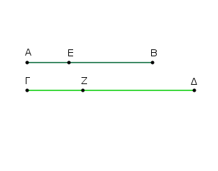
καὶ λοιπὸν ἄρα τὸ ΕΒ πρὸς λοιπὸν τὸ ΖΔ ἔσται ὡς ὅλον τὸ ΑΒ πρὸς ὅλον τὸ ΓΔ. ᾿Εὰν ἄρα ᾖ ὡς ὅλον πρὸς ὅλον, οὕτως ἀφαιρεθὲν πρὸς ἀφαιρεθέν, καὶ τὸ λοιπὸν πρὸς τὸ λοιπὸν ἔσται ὡς ὅλον πρὸς ὅλον [ὅπερ ἔδει δεῖξαι]. [Καὶ ἐπεὶ ἐδείχθη ὡς τὸ ΑΒ πρὸς τὸ ΓΔ, οὕτως τὸ ΕΒ πρὸς τὸ ΖΔ, καὶ ἐναλλὰξ ὡς τὸ ΑΒ πρὸς τὸ ΒΕ οὕτως τὸ ΓΔ πρὸς τὸ ΖΔ, συγκείμενα ἄρα μεγέθη ἀνάλογόν ἐστιν· ἐδείχθη δὲ ὡς τὸ ΒΑ πρὸς τὸ ΑΕ, οὕτως τὸ ΔΓ πρὸς τὸ ΓΖ· καί ἐστιν ἀναστρέψαντι].
Πόρισμα ᾿Εκ δὴ τούτου φανερόν, ὅτι ἐὰν συγκείμενα μεγέθη ἀνάλογον ᾖ, καὶ ἀναστρέψαντι ἀνάλογον ἔσται· ὅπερ ἔδει δεῖξαι.
᾿Εὰν ᾖ τρία μεγέθη καὶ ἄλλα αὐτοῖς ἴσα τὸ πλῆθος, σύνδυο λαμβανόμενα καὶ ἐν τῷ αὐτῷ λόγω, δι᾿ ἴσου δὲ τὸ πρῶτον τοῦ τρίτου μεῖζον ᾖ, καὶ τὸ τέταρτον τοῦ ἕκτου μεῖζον ἔσται, κἂν ἴσον, ἴσον, κἂν ἔλαττον, ἔλαττον.
῎Εστω τρία μεγέθη τὰ Α, Β, Γ, καὶ ἄλλα αὐτοῖς ἴσα τὸ πλῆθος τὰ Δ, Ε, Ζ, σύνδυο λαμβανόμενα ἐν τῷ αὐτῷ λόγῳ, ὡς μὲν τὸ Α πρὸς τὸ Β, οὕτως τὸ Δ πρὸς τὸ Ε, ὡς δὲ τὸ Β πρὸς τὸ Γ, οὕτως τὸ Ε πρὸς τὸ Ζ, δι᾿ ἴσου δὲ μεῖζον ἔστω τὸ Α τοῦ Γ· λέγω, ὅτι καὶ τὸ Δ τοῦ Ζ μεῖζον ἔσται, κἂν ἴσον, ἴσον, κἂν ἔλαττον, ἔλαττον.
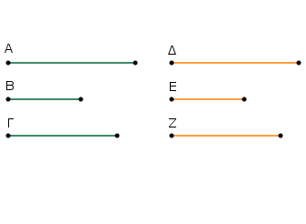
᾿Επεὶ γὰρ μεῖζόν ἐστι τὸ Α τοῦ Γ, ἄλλο δέ τι τὸ Β, τὸ δὲ μεῖζον πρὸς τὸ αὐτὸ μείζονα λόγον ἔχει ἤπερ τὸ ἔλαττον, τὸ Α ἄρα πρὸς τὸ Β μείζονα λόγον ἔχει ἤπερ τὸ Γ πρὸς τὸ Β. ἀλλ᾿ ὡς μὲν τὸ Α πρὸς τὸ Β [οὕτως] τὸ Δ πρὸς τὸ Ε, ὡς δὲ τὸ Γ πρὸς τὸ Β, ἀνάπαλιν οὕτως τὸ Ζ πρὸς τὸ Ε· καὶ τὸ Δ ἄρα πρὸς τὸ Ε μείζονα λόγον ἔχει ἤπερ τὸ Ζ πρὸς τὸ Ε. τῶν δὲ πρὸς τὸ αὐτὸ λόγον ἐχόντων τὸ μείζονα λόγον ἔχον μεῖζόν ἐστιν. μεῖζον ἄρα τὸ Δ τοῦ Ζ. ὁμοίως δὴ δείξομεν, ὅτι κἂν ἴσον ᾖ τὸ Α τῷ Γ, ἴσον ἔσται καὶ τὸ Δ τῷ Ζ, κἂν ἔλαττον, ἔλαττον.
᾿Εὰν ἄρα ᾖ τρία μεγέθη καὶ ἄλλα αὐτοῖς ἴσα τὸ πλῆθος, σύνδυο λαμβανόμενα καὶ ἐν τῷ αὐτῷ λόγω, δι᾿ ἴσου δὲ τὸ πρῶτον τοῦ τρίτου μεῖζον ᾖ, καὶ τὸ τέταρτον τοῦ ἕκτου μεῖζον ἔσται, κἂν ἴσον, ἴσον, κἂν ἔλαττον, ἔλαττον· ὅπερ ἔδει δεῖξαι.
᾿Εὰν ᾖ τρία μεγέθη καὶ ἄλλα αὐτοῖς ἴσα τὸ πλῆθος σύνδυο λαμβανόμενα καὶ ἐν τῷ αὐτῷ λόγῳ, ᾖ δὲ τεταραγμένη αὐτῶν ἡ ἀναλογία, δι᾿ ἴσου δὲ τὸ πρῶτον τοῦ τρίτου μεῖζον ᾖ, καὶ τὸ τέταρτον τοῦ ἕκτου μεῖζον ἔσται, κἂν ἴσον, ἴσον, κἂν ἔλαττον, ἔλαττον.
῎Εστω τρία μεγέθη τὰ Α, Β, Γ καὶ ἄλλα αὐτοῖς ἴσα τὸ πλῆθος τὰ Δ, Ε, Ζ, σύνδυο λαμβανόμενα καὶ ἐν τῷ αὐτῷ λόγῳ, ἔστω δὲ τεταραγμένη αὐτῶν ἡ ἀναλογία, ὡς μὲν τὸ Α πρὸς τὸ Β, οὕτως τὸ Ε πρὸς τὸ Ζ, ὡς δὲ τὸ Β πρὸς τὸ Γ, οὕτως τὸ Δ πρὸς τὸ Ε, δι᾿ ἴσου δὲ τὸ Α τοῦ Γ μεῖζον ἔστω· λέγω, ὅτι καὶ τὸ Δ τοῦ Ζ μεῖζον ἔσται, κἂν ἴσον, ἴσον, κἂν ἒλαττον, ἒλαττον.
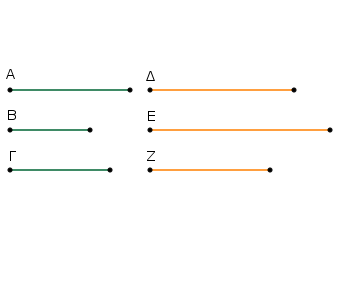
᾿Επεὶ γὰρ μεῖζόν ἐστι τὸ Α τοῦ Γ, ἄλλο δέ τι τὸ Β, τὸ Α ἄρα πρὸς τὸ Β μείζονα λόγον ἔχει ἤπερ τὸ Γ πρὸς τὸ Β. ἀλλ᾿ ὡς μὲν τὸ Α πρὸς τὸ Β, οὕτως τὸ Ε πρὸς τὸ Ζ, ὡς δὲ τὸ Γ πρὸς τὸ Β, ἀνάπαλιν οὕτως τὸ Ε πρὸς τὸ Δ. καὶ τὸ Ε ἄρα πρὸς τὸ Ζ μείζονα λόγον ἔχει ἤπερ τὸ Ε πρὸς τὸ Δ. πρὸς ὃ δὲ τὸ αὐτὸ μείζονα λόγον ἔχει, ἐκεῖνο ἔλασσόν ἐστιν· ἔλασσον ἄρα ἐστὶ τὸ Ζ τοῦ Δ· μεῖζον ἄρα ἐστὶ τὸ Δ τοῦ Ζ. ὁμοίως δὴ δείξομεν, ὅτι κἂν ἴσον ᾖ τὸ Α τῷ Γ, ἴσον ἔσται καὶ τὸ Δ τῷ Ζ, κἂν ἔλαττον, ἔλαττον.
᾿Εὰν ἄρα ᾖ τρία μεγέθη καὶ ἄλλα αὐτοῖς ἴσα τὸ πλῆθος, σύνδυο λαμβανόμενα καὶ ἐν τῷ αὐτῷ λόγῳ, ᾖ δὲ τεταραγμένη αὐτῶν ἡ ἀναλογία, δι᾿ ἴσου δὲ τὸ πρῶτον τοῦ τρίτου μεῖζον ᾖ, καὶ τὸ τέταρτον τοῦ ἕκτου μεῖζον ἔσται, κἂν ἴσον, ἴσον, κἂν ἔλαττον, ἔλαττον· ὅπερ ἔδει δεῖξαι.
᾿Εὰν ᾖ ὁποσαοῦν μεγέθη καὶ ἄλλα αὐτοῖς ἴσα τὸ πλῆθος, σύνδυο λαμβανόμενα καὶ ἐν τῷ αὐτῷ λόγῳ, καὶ δι᾿ ἴσου ἐν τῷ αὐτῷ λόγῳ ἔσται.
῎Εστω ὁποσαοῦν μεγέθη τὰ Α, Β, Γ καὶ ἄλλα αὐτοῖς ἴσα τὸ πλῆθος τὰ Δ, Ε, Ζ, σύνδυο λαμβανόμενα ἐν τῷ αὐτῷ λόγῳ, ὡς μὲν τὸ Α πρὸς τὸ Β, οὕτως τὸ Δ πρὸς τὸ Ε, ὡς δὲ τὸ Β πρὸς τὸ Γ, οὕτως τὸ Ε πρὸς τὸ Ζ· λέγω, ὅτι καὶ δι᾿ ἴσου ἐν τῷ αὐτῳ λόγῳ ἔσται.
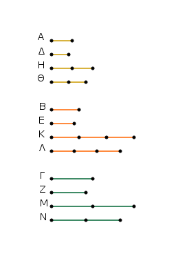
Εἰλήφθω γὰρ τῶν μὲν Α, Δ ἰσάκις πολλαπλάσια τὰ Η, Θ, τῶν δὲ Β, Ε ἄλλα, ἃ ἔτυχεν, ἰσάκις πολλαπλάσια τὰ Κ, Λ, καὶ ἔτι τῶν Γ, Ζ ἄλλα, ἃ ἔτυχεν, ἰσάκις πολλαπλάσια τὰ Μ, Ν.
Καὶ ἐπεί ἐστιν ὡς τὸ Α πρὸς τὸ Β, οὕτως τὸ Δ πρὸς τὸ Ε, καὶ εἴληπται τῶν μὲν Α, Δ ἰσάκις πολλαπλάσια τὰ Η, Θ, τῶν δὲ Β, Ε ἄλλα, ἃ ἔτυχεν, ἰσάκις πολλαπλάσια τὰ Κ, Λ, ἔστιν ἄρα ὡς τὸ Η πρὸς τὸ Κ, οὕτως τὸ Θ πρὸς τὸ Λ.
δὶα τὰ αὐτὰ δὴ καὶ ὡς τὸ Κ πρὸς τὸ Μ, οὕτως τὸ Λ πρὸς τὸ Ν. ἐπεὶ οὖν τρία μεγέθη ἐστὶ τὰ Η, Κ, Μ, καὶ ἄλλα αὐτοῖς ἴσα τὸ πλῆθος τὰ Θ, Λ, Ν, σύνδυο λαμβανόμενα καὶ ἐν τῷ αὐτῷ λόγῳ, δι᾿ ἴσου ἄρα, εἰ ὑπερέχει τὸ Η τοῦ Μ, ὑπερέχει καὶ τὸ Θ τοῦ Ν, καὶ εἰ ἴσον, ἴσον, καὶ εἰ ἔλαττον, ἔλαττον.
καί ἐστι τὰ μὲν Η, Θ τῶν Α, Δ ἰσάκις πολλαπλάσια, τὰ δὲ Μ, Ν τῶν Γ, Ζ ἄλλα, ἃ ἔτυχεν, ἰσάκις πολλαπλάσια. ἔστιν ἄρα ὡς τὸ Α πρὸς τὸ Γ, οὕτως τὸ Δ πρὸς τὸ Ζ.
᾿Εὰν ἄρα ᾖ ὁποσαοῦν μεγέθη καὶ ἄλλα αὐτοῖς ἴσα τὸ πλῆθος, σύνδυο λαμβανόμενα ἐν τῷ αὐτῷ λόγῳ, καὶ δι᾿ ἴσου ἐν τῷ αὐτῷ λόγῳ ἔσται· ὅπερ ἔδει δεῖξαι.
᾿Εὰν ᾖ τρία μεγέθη καὶ ἄλλα αὐτοῖς ἴσα τὸ πλῆθος σύνδυο λαμβανόμενα ἐν τῷ αὐτῷ λόγῳ, ᾖ δὲ τεταραγμένη αὐτῶν ἡ ἀναλογία, καὶ δι᾿ ἴσου ἐν τῷ αὐτῷ λόγῳ ἔσται.
῎Εστω τρία μεγέθη τὰ Α, Β, Γ καὶ ἄλλα αὐτοῖς ἴσα τὸ πλῆθος σύνδυο λαμβανόμενα ἐν τῷ αὐτῷ λόγῳ τὰ Δ, Ε, Ζ, ἔστω δὲ τεταραγμένη αὐτῶν ἡ ἀναλογία, ὡς μὲν τὸ Α πρὸς τὸ Β, οὕτως τὸ Ε πρὸς τὸ Ζ, ὡς δὲ τὸ Β πρὸς τὸ Γ, οὕτως τὸ Δ πρὸς τὸ Ε· λέγω, ὅτι ἐστὶν ὡς τὸ Α πρὸς τὸ Γ, οὕτως τὸ Δ πρὸς τὸ Ζ.
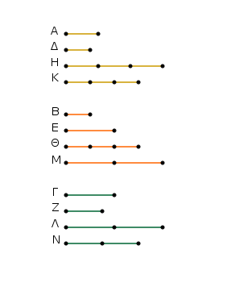
Εἰλήφθω τῶν μὲν Α, Β, Δ ἰσάκις πολλαπλάσια τὰ Η, Θ, Κ, τῶν δὲ Γ, Ε, Ζ ἄλλα, ἃ ἔτυχεν, ἰσάκις πολλαπλάσια τὰ Λ, Μ, Ν. Καὶ ἐπεὶ ἰσάκις ἐστὶ πολλαπλάσια τὰ Η, Θ τῶν Α, Β, τὰ δὲ μέρη τοὶς ὡσαύτως πολλαπλασίοις τὸν αὐτὸν ἔχει λόγον, ἔστιν ἄρα ὡς τὸ Α πρὸς τὸ Β, οὕτως τὸ Η πρὸς τὸ Θ.
διὰ τὰ αὐτὰ δὴ καὶ ὡς τὸ Ε πρὸς τὸ Ζ, οὕτως τὸ Μ πρὸς τὸ Ν· καί ἐστιν ὡς τὸ Α πρὸς τὸ Β, οὕτως τὸ Ε πρὸς τὸ Ζ· καὶ ὡς ἄρα τὸ Η πρὸς τὸ Θ, οὕτως τὸ Μ πρὸς τὸ Ν. καὶ ἐπεί ἐστιν ὡς τὸ Β πρὸς τὸ Γ, οὕτως τὸ Δ πρὸς τὸ Ε, καὶ ἐναλλὰξ ὡς τὸ Β πρὸς τὸ Δ, οὕτως τὸ Γ πρὸς τὸ Ε. καὶ ἐπεὶ τὰ Θ, Κ τῶν Β, Δ ἰσάκις ἐστὶ πολλαπλάσια, τὰ δὲ μέρη τοῖς ἰσάκις πολλαπλασίοις τὸν αὐτὸν ἔχει λόγον, ἔστιν ἄρα ὡς τὸ Β πρὸς τὸ Δ, οὕτως τὸ Θ πρὸς τὸ Κ. ἀλλ᾿ ὡς τὸ Β πρὸς τὸ Δ, οὕτως τὸ Γ πρὸς τὸ Ε· καὶ ὡς ἄρα τὸ Θ πρὸς τὸ Κ, οὕτως τὸ Γ πρὸς τὸ Ε.
πάλιν, ἐπεὶ τὰ Λ, Μ τῶν Γ, Ε ἰσάκις ἐστι πολλαπλάσια, ἔστιν ἄρα ὡς τὸ Γ πρὸς τὸ Ε, οὕτως τὸ Λ πρὸς τὸ Μ. ἀλλ᾿ ὡς τὸ Γ πρὸς τὸ Ε, οὕτως τὸ Θ πρὸς τὸ Κ· καὶ ὡς ἄρα τὸ Θ πρὸς τὸ Κ, οὕτως τὸ Λ πρὸς τὸ Μ, καὶ ἐναλλὰξ ὡς τὸ Θ πρὸς τὸ Λ, τὸ Κ πρὸς τὸ Μ. ἐδείχθη δὲ καὶ ὡς τὸ Η πρὸς τὸ Θ, οὕτως τὸ Μ πρὸς τὸ Ν.
ἐπεὶ οὖν τρία μεγέθη ἐστὶ τὰ Η, Θ, Λ, καὶ ἄλλα αὐτοις ἴσα τὸ πλῆθος τὰ Κ, Μ, Ν σύνδυο λαμβανόμενα ἐν τῷ αὐτῷ λόγῳ, καί ἐστιν αὐτῶν τεταραγμένη ἡ ἀναλογία, δι᾿ ἴσου ἄρα, εἰ ὑπερέχει τὸ Η τοῦ Λ, ὑπερέχει καὶ τὸ Κ τοῦ Ν, καὶ εἰ ἴσον, ἴσον, καὶ εἰ ἔλαττον, ἔλαττον. καί ἐστι τὰ μὲν Η, Κ τῶν Α, Δ ἰσάκις πολλαπλάσια, τὰ δὲ Λ, Ν τῶν Γ, Ζ. ἔστιν ἄρα ὡς τὸ Α πρὸς τὸ Γ, οὕτως τὸ Δ πρὸς τὸ Ζ.
᾿Εὰν ἄρα ᾖ τρία μεγέθη καὶ ἄλλα αὐτοῖς ἴσα τὸ πλῆθος σύνδυο λαμβανόμενα ἐν τῷ αὐτῷ λόγῳ, ᾖ δὲ τεταραγμένη αὐτῶν ἡ ἀναλογία, καὶ δι᾿ ἴσου ἐν τῷ αὐτῷ λόγῳ ἔσται· ὅπερ ἔδει δεῖξαι.
᾿Εὰν πρῶτον πρὸς δεύτερον τὸν αὐτὸν ἔχῃ λόγον καὶ τρίτον πρὸς τέταρτον, ἔχῃ δὲ καὶ πέμπτον πρὸς δεύτερον τὸν αὐτὸν λόγον καὶ ἕκτον πρὸς τέταρτον, καὶ συντεθὲν πρῶτον καὶ πέμπτον πρὸς δεύτερον τὸν αὐτὸν ἕξει λόγον καὶ τρίτον καὶ ἕκτον πρὸς τέταρτον.
Πρῶτον γὰρ τὸ ΑΒ πρὸς δεύρερον τὸ Γ τὸν αὐτὸν ἐχέτω λόγον καὶ τρίτον τὸ ΔΕ πρὸς τέταρτον τὸ Ζ, ἐχέτω δὲ καὶ πέμπτον τὸ ΒΗ πρὸς δεύτερον τὸ Γ τὸν αὐτὸν λόγον καὶ ἕκτον τὸ ΕΘ πρὸς τέταρτον τὸ Ζ· λέγω, ὅτι καὶ συντεθὲν πρῶτον καὶ πέμπτον τὸ ΑΗ πρὸς δεύτερον τὸ Γ τὸν αὐτὸν ἕξει λόγον, καὶ τρίτον καὶ ἕκτον τὸ ΔΘ πρὸς τέταρτον τὸ Ζ.
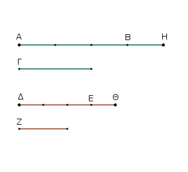
᾿Επεὶ γάρ ἐστιν ὡς τὸ ΒΗ πρὸς τὸ Γ, οὕτως τὸ ΕΘ πρὸς τὸ Ζ, ἀνάπαλιν ἄρα ὡς τὸ Γ πρὸς τὸ ΒΗ, οὕτως τὸ Ζ πρὸς τὸ ΕΘ. ἐπεὶ οὖν ἐστιν ὡς τὸ ΑΒ πρὸς τὸ Γ, οὕτως τὸ ΔΕ πρὸς τὸ Ζ, ὡς δὲ τὸ Γ πρὸς τὸ ΒΗ, οὕτως τὸ Ζ πρὸς τὸ ΕΘ, δι᾿ ἴσου ἄρα ἐστὶν ὡς τὸ ΑΒ πρὸς τὸ ΒΗ, οὕτως τὸ ΔΕ πρὸς τὸ ΕΘ. καὶ ἐπεὶ διῃρημένα μεγέθη ἀνάλογόν ἐστιν, καὶ συντεθέντα ἀνάλογον ἔσται· ἔστιν ἄρα ὡς τὸ ΑΗ πρὸς τὸ ΗΒ, οὕτως τὸ ΔΘ πρὸς τὸ ΘΕ. ἔστι δὲ καὶ ὡς τὸ ΒΗ πρὸς τὸ Γ, οὕτως τὸ ΕΘ πρὸς τὸ Ζ· δι᾿ ἴσου ἄρα ἐστὶν ὡς τὸ ΑΗ πρὸς τὸ Γ, οὕτως τὸ ΔΘ πρὸς τὸ Ζ.
᾿Εὰν ἄρα πρῶτον πρὸς δεύτερον τὸν αὐτὸν ἔχῃ λόγον καὶ τρίτον πρὸς τέταρτον, ἔχῃ δὲ καὶ πέμπτον πρὸς δεύτερον τὸν αὐτὸν λόγον καὶ ἕκτον πρὸς τέταρτον, καὶ συντεθὲν πρῶτον καὶ πέμπτον πρὸς δεύτερον τὸν αὐτὸν ἕξει λόγον καὶ τρίτον καὶ ἕκτον πρὸς τέταρτον· ὅπερ ἔδει δεὶξαι.
᾿Εὰν τέσσαρα μεγέθη ἀνάλογον ᾖ, τὸ μέγιστον [αὐτῶν] καὶ τὸ ἐλάχιστον δύο τῶν λοιπῶν μείζονά ἐστιν.
῎Εστω τέσσαρα μεγέθη ἀνάλογον τὰ ΑΒ, ΓΔ, Ε, Ζ, ὡς τὸ ΑΒ πρὸς τὸ ΓΔ, οὕτως τὸ Ε πρὸς τὸ Ζ, ἔστω δὲ μέγιστον μὲν αὐτῶν τὸ ΑΒ, ἐλάχιστον δὲ τὸ Ζ· λέγω, ὅτι τὰ ΑΒ, Ζ τῶν ΓΔ, Ε μείζονά ἐστιν.
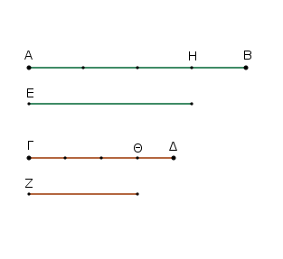
Κείσθω γὰρ τῷ μὲν Ε ἴσον τὸ ΑΗ, τῷ δὲ Ζ ἴσον τὸ ΓΘ. ᾿Επεὶ [οὖν] ἐστιν ὡς τὸ ΑΒ πρὸς τὸ ΓΔ, οὕτως τὸ Ε πρὸς τὸ Ζ, ἴσον δὲ τὸ μὲν Ε τῷ ΑΗ, τὸ δὲ Ζ τῷ ΓΘ, ἔστιν ἄρα ὡς τὸ ΑΒ πρὸς τὸ ΓΔ, οὕτως τὸ ΑΗ πρὸς τὸ ΓΘ.
καὶ ἐπεί ἐστιν ὡς ὅλον τὸ ΑΒ πρὸς ὅλον τὸ ΓΔ, οὕτως ἀφαιρεθὲν τὸ ΑΗ πρὸς ἀφαιρεθὲν τὸ ΓΘ, καὶ λοιπὸν ἄρα τὸ ΗΒ πρὸς λοιπὸν τὸ ΘΔ ἔσται ὡς ὅλον τὸ ΑΒ πρὸς ὅλον τὸ ΓΔ. μεῖζον δὲ τὸ ΑΒ τοῦ ΓΔ· μεῖζον ἄρα καὶ τὸ ΗΒ τοῦ ΘΔ.
καὶ ἐπεὶ ἴσον ἐστὶ τὸ μὲν ΑΗ τῷ Ε, τὸ δὲ ΓΘ τῷ Ζ, τὰ ἄρα ΑΗ, Ζ ἴσα ἐστὶ τοῖς ΓΘ, Ε. καὶ [ἐπεὶ] ἐὰν [ἀνίσοις ἴσα προστεθῇ, τὰ ὅλα ἄνισά ἐστιν, ἐὰν ἄρα] τῶν ΗΒ, ΘΔ ἀνίσων ὄντων καὶ μείζονος τοῦ ΗΒ τῷ μὲν ΗΒ προστεθῇ τὰ ΑΗ, Ζ, τῷ δὲ ΘΔ προστεθῇ τὰ ΓΘ, Ε, συνάγεται τὰ ΑΒ, Ζ μείζονα τῶν ΓΔ, Ε.
᾿Εὰν ἄρα τέσσαρα μεγέθη ἀνάλογον ᾖ, τὸ μέγιστον αὐτῶν καὶ τὸ ἐλάχιστον δύο τῶν λοιπῶν μείζονά ἐστιν. ὅπερ ἔδει δεῖξαι.